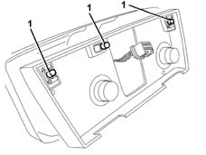

5020B28 air conditioner symbol light bulb/s - includes control panel r+r
- Path
- Procedures > 50 AUXILIARY UNITS > 5020 HEATER > 5020B heater controls > 5020B28 air conditioner symbol light bulb/s - includes control panel r+r
- Kind
- repair procedure (removal / refitting; the operation number is the code)
- Applies to
- all engines; all production periods
- Interactive page
- https://sloeber94.github.io/elrnDB-lYpsln/en/#/2429298
Applies to: all engines; all production periods
 Removing
Removing
 Refitting
Refitting7040L28 tunnel switch panel - r r
7040L22 REAR TRIM on TUNNEL -R.R.
7040A18 glove compartment on facia - arrange
7040A30 Left instrument panel lower TRIM - R.R.
2125A30 lever/knob cover - r + r
7040A28 TRIM on gearbox control panel - R.R.
5040D20 air conditioner control switches/button unit - r r
1. Extract the bulbs involved.

Applies to: all engines; all production periods
Refitting
RemovingCheck that the bulbs are working properly.
Fit the bulbs in their housing.
5040D20 air conditioner control switches/button unit - r r
7040A28 TRIM on gearbox control panel - R.R.
2125A30 lever/knob cover - r + r
7040A30 Left instrument panel lower TRIM - R.R.
7040A18 glove compartment on facia - arrange
7040L22 REAR TRIM on TUNNEL -R.R.
7040L28 tunnel switch panel - r r
Check that the lighting controls are working properly.
Topics linked from this page (9)
- 2125A30 lever/knob cover - r + r
- 5040D20 air conditioner control switches/button unit - r r
- 5570T80 car radio unit - r+r
- 7040A18 glove compartment on facia - arrange
- 7040A28 TRIM on gearbox control panel - R.R.
- 7040A30 Left instrument panel lower TRIM - R.R.
- 7040L20 tunnel trim - r r
- 7040L22 REAR TRIM on TUNNEL -R.R.
- 7040L28 tunnel switch panel - r r